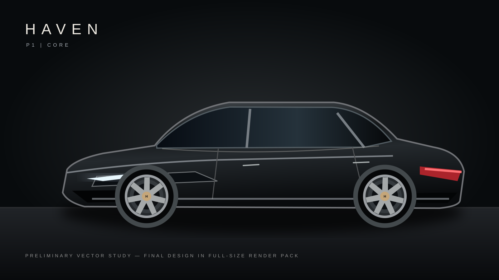
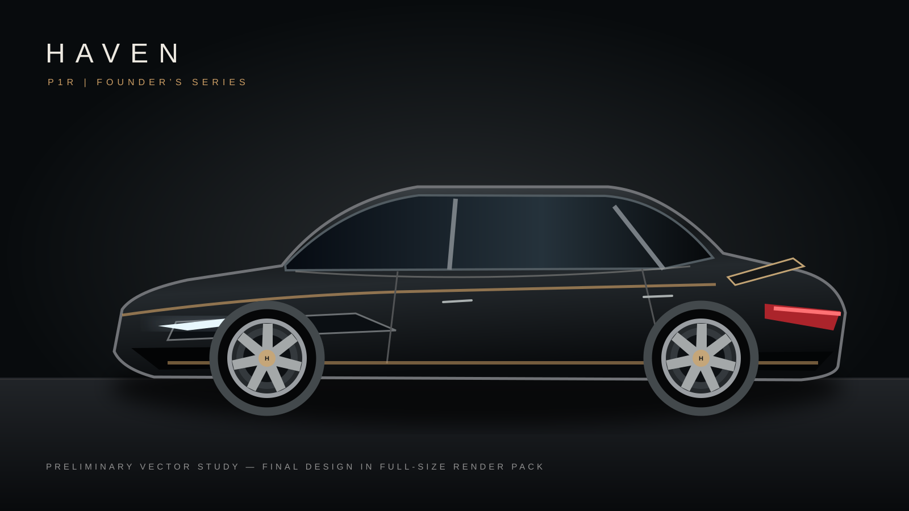

Preliminary technical RFI for HAVEN P1 Core and P1R Founder's Series, neither of which is currently certified or under production.
Target donor-based compact sedan architecture, 1.5–2.0L gasoline FWD, five-seat configuration; trim and dimensions subject to platform hard points.

Examine licensed high-performance EV or internal-combustion sedan architectures. 800+ hp is an ambition, not a minimum specification or supplier requirement.
Use standard 12V batteries, tire sizes, service items and supplier part families when legally and technically compatible. No unvalidated cross-brand fit claims.
Feasibility of secure, replaceable infotainment computer isolated from safety-critical controllers; signed updates and secure diagnostic gateway.
Documented removal times, accessible powertrain service items, replaceable exterior cosmetic modules and published torque/fitment specifications.
Common structural seat frames, optional trim skins and upholstery; functional acoustic insulation and tactile controls shared across trims.
Initial demonstrator must preserve factory restraints, braking, steering and emissions. Custom bodywork reviewed by qualified engineers.
Platform/IP access; powertrain integration; CAD packaging; low-volume prototype assembly; U.S. emissions and safety certification pathway; volume and tooling breakpoints.
P1 unit cost must approach $14,392 or less at $17,990 delivered for a 20% vehicle gross margin, depending on channel accounting; P1R needs major cost reduction vs current preliminary model.
Request a non-binding introductory call and budgetary engineering scoping statement; no assumption of partnership, pricing, or production availability.
HAVEN is a proposed venture. No manufactured vehicles, validated pricing, order book, supplier contracts, or committed investment round. Illustrations are design studies; business and engineering projections are unverified. No offer of securities is made by this presentation.
RETURN TO HAVEN →